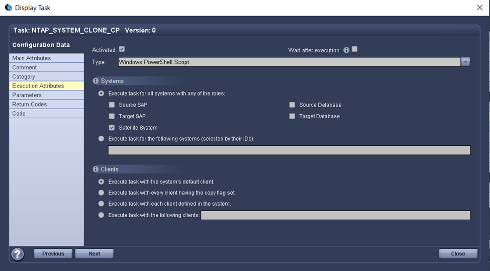
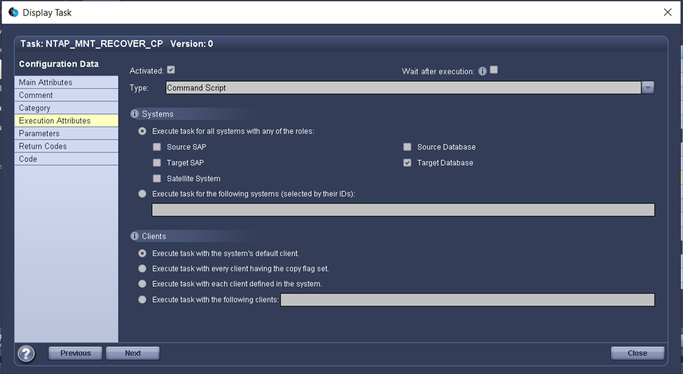

Best Practice
Best Practice
Aggiornamento del sistema SAP HANA con LSC e SnapCenter
 Suggerisci modifiche
Suggerisci modifiche
Questa sezione descrive come integrare LSC con NetApp SnapCenter. L'integrazione tra LSC e SnapCenter supporta tutti i database supportati da SAP. Tuttavia, dobbiamo differenziarci tra SAP AnyDB e SAP HANA perché SAP HANA fornisce un host centrale per le comunicazioni che non è disponibile per SAP AnyDB.
L'installazione predefinita dell'agente SnapCenter e del plug-in del database per gli AnyDB SAP è un'installazione locale dell'agente SnapCenter oltre al plug-in del database corrispondente per il server database.
In questa sezione, l'integrazione tra LSC e SnapCenter viene descritta utilizzando un database SAP HANA come esempio. Come indicato in precedenza per SAP HANA, sono disponibili due diverse opzioni per l'installazione dell'agente SnapCenter e del plug-in del database SAP HANA:
-
Un agente SnapCenter standard e un'installazione del plug-in SAP HANA. in un'installazione standard, l'agente SnapCenter e il plug-in SAP HANA vengono installati localmente sul server di database SAP HANA.
-
Un'installazione di SnapCenter con un host centrale di comunicazione. Un host centrale di comunicazione viene installato con l'agente SnapCenter, il plug-in SAP HANA e il client di database HANA che gestisce tutte le operazioni relative al database necessarie per eseguire il backup e il ripristino di un database SAP HANA per diversi sistemi SAP HANA nell'ambiente. Pertanto, un host di comunicazione centrale non deve avere un sistema di database SAP HANA completo installato.
Per ulteriori informazioni su questi diversi agenti SnapCenter e sulle opzioni di installazione del plug-in del database SAP HANA, consulta il report tecnico "TR-4614: Backup e recovery SAP HANA con SnapCenter".
Le sezioni seguenti evidenziano le differenze tra l'integrazione di LSC con SnapCenter mediante l'installazione standard o l'host centrale di comunicazione. In particolare, tutte le fasi di configurazione non evidenziate sono le stesse indipendentemente dall'opzione di installazione e dal database utilizzato.
Per eseguire un backup automatizzato basato su copia Snapshot dal database di origine e creare un clone per il nuovo database di destinazione, l'integrazione descritta tra LSC e SnapCenter utilizza le opzioni di configurazione e gli script descritti nella "TR-4667: Automazione delle operazioni di copia e clonazione del sistema SAP HANA con SnapCenter".
Panoramica
La figura seguente mostra un tipico workflow di alto livello per un ciclo di vita di refresh del sistema SAP con SnapCenter senza LSC:
-
Installazione e preparazione del sistema di destinazione una tantum.
-
Pre-elaborazione manuale (esportazione di licenze, utenti, stampanti e così via).
-
Se necessario, l'eliminazione di un clone già esistente sul sistema di destinazione.
-
La clonazione di una copia Snapshot esistente del sistema di origine nel sistema di destinazione eseguita da SnapCenter.
-
Operazioni di post-elaborazione SAP manuali (importazione di licenze, utenti, stampanti, disattivazione dei processi batch e così via).
-
Il sistema può quindi essere utilizzato come sistema di test o QA.
-
Quando viene richiesto un nuovo aggiornamento del sistema, il flusso di lavoro viene riavviato alla fase 2.
I clienti SAP sanno che i passaggi manuali colorati in verde nella figura seguente sono lunghi e soggetti a errori. Quando si utilizza l'integrazione di LSC e SnapCenter, questi passaggi manuali vengono eseguiti con LSC in modo affidabile e ripetibile con tutti i registri necessari per gli audit interni ed esterni.
La figura seguente fornisce una panoramica della procedura generale di aggiornamento del sistema SAP basata su SnapCenter.

Prerequisiti e limitazioni
Devono essere soddisfatti i seguenti prerequisiti:
-
SnapCenter deve essere installato. Il sistema di origine e di destinazione deve essere configurato in SnapCenter, in un'installazione standard o utilizzando un host di comunicazione centrale. Le copie Snapshot possono essere create sul sistema di origine.
-
Il backend dello storage deve essere configurato correttamente in SnapCenter, come mostrato nell'immagine seguente.

Le due immagini successive riguardano l'installazione standard in cui l'agente SnapCenter e il plug-in SAP HANA sono installati localmente su ciascun server di database.
L'agente SnapCenter e il plug-in del database appropriato devono essere installati nel database di origine.

L'agente SnapCenter e il plug-in del database appropriato devono essere installati nel database di destinazione.

La seguente immagine descrive l'implementazione centrale degli host di comunicazione in cui l'agente SnapCenter, il plug-in SAP HANA e il client di database SAP HANA sono installati su un server centralizzato (come il server SnapCenter) per gestire diversi sistemi SAP HANA nell'ambiente.
L'agente SnapCenter, il plug-in del database SAP HANA e il client del database HANA devono essere installati sull'host centrale di comunicazione.

Il backup per il database di origine deve essere configurato correttamente in SnapCenter in modo che la copia Snapshot possa essere creata correttamente.

Il master LSC e il worker LSC devono essere installati nell'ambiente SAP. In questa implementazione, abbiamo anche installato il master LSC sul server SnapCenter e il worker LSC sul server di database SAP di destinazione, che deve essere aggiornato. Ulteriori informazioni sono descritte nella sezione seguente "Setup di laboratorio."
Risorse di documentazione:
Setup di laboratorio
Questa sezione descrive un'architettura di esempio che è stata configurata in un data center dimostrativo. L'installazione è stata divisa in un'installazione standard e in un'installazione che utilizza un host di comunicazione centrale.
Installazione standard
La figura seguente mostra un'installazione standard in cui l'agente SnapCenter e il plug-in del database sono stati installati localmente sul server del database di origine e di destinazione. Nella configurazione di laboratorio, abbiamo installato il plug-in SAP HANA. Inoltre, il worker LSC è stato installato anche sul server di destinazione. Per semplificare e ridurre il numero di server virtuali, abbiamo installato il master LSC sul server SnapCenter. La comunicazione tra i diversi componenti è illustrata nella figura seguente.

Host centrale di comunicazione
La figura seguente mostra la configurazione mediante un host di comunicazione centrale. In questa configurazione, l'agente SnapCenter, il plug-in SAP HANA e il client del database HANA sono stati installati su un server dedicato. In questa configurazione, abbiamo utilizzato il server SnapCenter per installare l'host centrale per le comunicazioni. Inoltre, il worker LSC è stato nuovamente installato sul server di destinazione. Per semplificare e ridurre il numero di server virtuali, abbiamo deciso di installare anche il master LSC sul server SnapCenter. La comunicazione tra i diversi componenti è illustrata nella figura seguente.

Fasi iniziali di preparazione una tantum per libelle SystemCopy
Esistono tre componenti principali di un'installazione LSC:
-
LSC master. come suggerisce il nome, questo è il componente master che controlla il flusso di lavoro automatico di una copia di sistema basata su libelle. Nell'ambiente demo, il master LSC è stato installato sul server SnapCenter.
-
LSC Worker. un LSC Worker è la parte del software Libelle che in genere viene eseguito sul sistema SAP di destinazione ed esegue gli script richiesti per la copia automatica del sistema. Nell'ambiente demo, il worker LSC è stato installato sul server applicativo SAP HANA di destinazione.
-
Satellite LSC. un satellite LSC fa parte del software libelle che viene eseguito su un sistema di terze parti su cui devono essere eseguiti ulteriori script. Il master LSC può anche svolgere il ruolo di sistema satellitare LSC allo stesso tempo.
Per prima cosa abbiamo definito tutti i sistemi coinvolti all'interno di LSC, come mostrato nella seguente immagine:
-
172.30.15.35. Indirizzo IP del sistema di origine SAP e del sistema di origine SAP HANA.
-
172.30.15.3. Indirizzo IP del master LSC e del sistema satellitare LSC per questa configurazione. Poiché è stato installato il master LSC sul server SnapCenter, i cmdlet PowerShell di SnapCenter 4.x sono già disponibili su questo host Windows perché sono stati installati durante l'installazione del server SnapCenter. Abbiamo quindi deciso di abilitare il ruolo satellite LSC per questo sistema ed eseguire tutti i cmdlet PowerShell di SnapCenter su questo host. Se si utilizza un sistema diverso, assicurarsi di installare i cmdlet PowerShell di SnapCenter su questo host in base alla documentazione di SnapCenter.
-
172.30.15.36. l'indirizzo IP del sistema di destinazione SAP, del sistema di destinazione SAP HANA e dell'operatore LSC.
Invece di indirizzi IP, è possibile utilizzare anche nomi host o nomi di dominio completi.
La seguente immagine mostra la configurazione LSC di master, worker, satellite, origine SAP, destinazione SAP, database di origine e database di destinazione.

Per l'integrazione principale, è necessario separare nuovamente le fasi di configurazione nell'installazione standard e nell'installazione utilizzando un host di comunicazione centrale.
Installazione standard
In questa sezione vengono descritte le procedure di configurazione necessarie quando si utilizza un'installazione standard in cui l'agente SnapCenter e il plug-in del database necessari sono installati sui sistemi di origine e di destinazione. Quando si utilizza un'installazione standard, tutte le attività necessarie per montare il volume clone e ripristinare e ripristinare il sistema di destinazione vengono eseguite dall'agente SnapCenter in esecuzione sul sistema di database di destinazione sul server stesso. In questo modo è possibile accedere a tutti i dettagli relativi ai cloni disponibili tramite le variabili ambientali dell'agente SnapCenter. Pertanto, nella fase di copia LSC è necessario creare un'unica attività aggiuntiva. Questa attività esegue il processo di copia Snapshot sul sistema di database di origine e il processo di clonazione e ripristino e ripristino sul sistema di database di destinazione. Tutte le attività correlate a SnapCenter vengono attivate utilizzando uno script PowerShell inserito nell'attività LSC NTAP_SYSTEM_CLONE.
L'immagine seguente mostra la configurazione dell'attività LSC nella fase di copia.

La seguente immagine evidenzia la configurazione di NTAP_SYSTEM_CLONE processo. Poiché si sta eseguendo uno script PowerShell, questo script di Windows PowerShell viene eseguito sul sistema satellitare. In questo caso, si tratta del server SnapCenter con il master LSC installato che funge anche da sistema satellitare.

Poiché l'LSC deve essere consapevole dell'esito positivo delle operazioni di copia, clonazione e ripristino di Snapshot, è necessario definire almeno due tipi di codice di ritorno. Un codice serve per eseguire correttamente lo script, mentre l'altro per eseguire lo script in modo non riuscito, come illustrato nell'immagine seguente.
-
LSC:OKdeve essere scritto dallo script in standard out se l'esecuzione ha avuto esito positivo. -
LSC:ERRORdeve essere scritto dallo script in standard out se l'esecuzione non è riuscita.

L'immagine seguente mostra parte dello script PowerShell che deve essere eseguito per eseguire un backup basato su Snapshot sul sistema di database di origine e un clone sul sistema di database di destinazione. Lo script non deve essere completo. Piuttosto, lo script mostra l'aspetto dell'integrazione tra LSC e SnapCenter e la facilità di configurazione.

Poiché lo script viene eseguito sul master LSC (che è anche un sistema satellite), il master LSC sul server SnapCenter deve essere eseguito come utente Windows che dispone delle autorizzazioni appropriate per eseguire operazioni di backup e clonazione in SnapCenter. Per verificare se l'utente dispone delle autorizzazioni appropriate, deve essere in grado di eseguire una copia Snapshot e un clone nell'interfaccia utente di SnapCenter.
Non è necessario eseguire il master LSC e il satellite LSC sul server SnapCenter stesso. Il master LSC e il satellite LSC possono essere eseguiti su qualsiasi macchina Windows. Il prerequisito per l'esecuzione dello script PowerShell sul satellite LSC è che i cmdlet PowerShell di SnapCenter siano stati installati sul server Windows.
Host centrale di comunicazione
Per l'integrazione tra LSC e SnapCenter utilizzando un host di comunicazione centrale, le uniche modifiche da eseguire vengono eseguite nella fase di copia. La copia Snapshot e il clone vengono creati utilizzando l'agente SnapCenter sull'host di comunicazione centrale. Pertanto, tutti i dettagli sui volumi appena creati sono disponibili solo sull'host centrale di comunicazione e non sul server del database di destinazione. Tuttavia, questi dettagli sono necessari sul server di database di destinazione per montare il volume clone ed eseguire il ripristino. Questo è il motivo per cui sono necessarie due attività aggiuntive nella fase di copia. Un'attività viene eseguita sull'host centrale di comunicazione e un'attività viene eseguita sul server del database di destinazione. Queste due attività sono mostrate nell'immagine seguente.
-
NTAP_SYSTEM_CLONE_CP. questa attività crea la copia Snapshot e il clone utilizzando uno script PowerShell che esegue le necessarie funzioni SnapCenter sull'host centrale di comunicazione. Questa attività viene quindi eseguita sul satellite LSC, che nella nostra istanza è il master LSC eseguito su Windows. Questo script raccoglie tutti i dettagli relativi al clone e ai volumi appena creati e lo passa alla seconda attività
NTAP_MNT_RECOVER_CP, Che viene eseguito sul worker LSC in esecuzione sul server del database di destinazione. -
NTAP_MNT_RECOVER_CP. questa attività arresta il sistema SAP di destinazione e il database SAP HANA, smonta i vecchi volumi e monta i volumi dei cloni di storage appena creati in base ai parametri passati dall'attività precedente
NTAP_SYSTEM_CLONE_CP. Il database SAP HANA di destinazione viene quindi ripristinato e ripristinato.

La seguente immagine evidenzia la configurazione dell'attività NTAP_SYSTEM_CLONE_CP. Si tratta dello script di Windows PowerShell eseguito sul sistema satellitare. In questo caso, il sistema satellitare è il server SnapCenter con il master LSC installato.

Poiché LSC deve essere consapevole dell'esito positivo dell'operazione di copia e clonazione Snapshot, è necessario definire almeno due tipi di codice di ritorno: Un codice di ritorno per l'esecuzione corretta dello script e l'altro per l'esecuzione non riuscita dello script, come illustrato nell'immagine seguente.
-
LSC:OKdeve essere scritto dallo script in standard out se l'esecuzione ha avuto esito positivo. -
LSC:ERRORdeve essere scritto dallo script in standard out se l'esecuzione non è riuscita.

L'immagine seguente mostra parte dello script PowerShell che deve essere eseguito per eseguire una copia Snapshot e un clone utilizzando l'agente SnapCenter sull'host di comunicazione centrale. Lo script non deve essere completo. Lo script viene invece utilizzato per mostrare l'aspetto dell'integrazione tra LSC e SnapCenter e la facilità di configurazione.

Come indicato in precedenza, è necessario consegnare il nome del volume clone all'attività successiva NTAP_MNT_RECOVER_CP per montare il volume clone sul server di destinazione. Il nome del volume clone, noto anche come percorso di giunzione, viene memorizzato nella variabile $JunctionPath. Il trasferimento a un'attività LSC successiva viene ottenuto attraverso una variabile LSC personalizzata.
echo $JunctionPath > $_task(current, custompath1)_$
Poiché lo script viene eseguito sul master LSC (che è anche un sistema satellite), il master LSC sul server SnapCenter deve essere eseguito come utente Windows che dispone delle autorizzazioni appropriate per eseguire le operazioni di backup e clonazione in SnapCenter. Per verificare se dispone delle autorizzazioni appropriate, l'utente deve essere in grado di eseguire una copia Snapshot e un clone nella GUI di SnapCenter.
La figura seguente evidenzia la configurazione dell'attività NTAP_MNT_RECOVER_CP. Poiché si desidera eseguire uno script Linux Shell, si tratta di uno script di comando eseguito sul sistema di database di destinazione.

Poiché LSC deve essere consapevole del montaggio dei volumi clone e dell'esito positivo del ripristino e del ripristino del database di destinazione, è necessario definire almeno due tipi di codice di ritorno. Un codice serve per eseguire correttamente lo script e uno per eseguire lo script in modo non riuscito, come illustrato nella figura seguente.
-
LSC:OKdeve essere scritto dallo script in standard out se l'esecuzione ha avuto esito positivo. -
LSC:ERRORdeve essere scritto dallo script in standard out se l'esecuzione non è riuscita.

La figura seguente mostra parte dello script della shell Linux utilizzato per arrestare il database di destinazione, smontare il vecchio volume, montare il volume clone e ripristinare e ripristinare il database di destinazione. Nell'attività precedente, il percorso di giunzione è stato scritto in una variabile LSC. Il comando seguente legge questa variabile LSC e memorizza il valore in $JunctionPath Variabile dello script della shell Linux.
JunctionPath=$_include($_task(NTAP_SYSTEM_CLONE_CP, custompath1)_$, 1, 1)_$
L'operatore LSC sul sistema di destinazione viene eseguito come <sidaadm>, ma i comandi mount devono essere eseguiti come utente root. Per questo motivo è necessario creare central_plugin_host_wrapper_script.sh. Lo script central_plugin_host_wrapper_script.sh viene chiamato dall'attività NTAP_MNT_RECOVERY_CP utilizzando il sudo comando. Utilizzando il sudo Lo script viene eseguito con UID 0 e siamo in grado di eseguire tutte le fasi successive, come smontare i vecchi volumi, montare i volumi clone e ripristinare e ripristinare il database di destinazione. Per attivare l'esecuzione dello script con sudo, la seguente riga deve essere aggiunta in /etc/sudoers:
hn6adm ALL=(root) NOPASSWD:/usr/local/bin/H06/central_plugin_host_wrapper_script.sh

Operazione di refresh del sistema SAP HANA
Ora che sono state eseguite tutte le attività di integrazione necessarie tra LSC e NetApp SnapCenter, avviare un aggiornamento del sistema SAP completamente automatizzato è un'operazione con un solo clic.
La figura seguente mostra l'attività NTAP``SYSTEM``CLONE in un'installazione standard. Come si può vedere, la creazione di una copia Snapshot e di un clone, il montaggio del volume clone sul server del database di destinazione e il ripristino e il ripristino del database di destinazione hanno richiesto circa 14 minuti. Sorprendentemente, con la tecnologia Snapshot e NetApp FlexClone, la durata di questa attività rimane quasi la stessa, indipendentemente dalle dimensioni del database di origine.

La figura seguente mostra le due attività NTAP_SYSTEM_CLONE_CP e. NTAP_MNT_RECOVERY_CP quando si utilizza un host di comunicazione centrale. Come si può vedere, la creazione di una copia Snapshot, di un clone, il montaggio del volume clone sul server del database di destinazione e il ripristino e il ripristino del database di destinazione hanno richiesto circa 12 minuti. Questo tempo è più o meno lo stesso necessario per eseguire queste operazioni quando si utilizza un'installazione standard. Anche in questo caso, la tecnologia Snapshot e NetApp FlexClone consente il completamento rapido e coerente di queste attività, indipendentemente dalle dimensioni del database di origine.